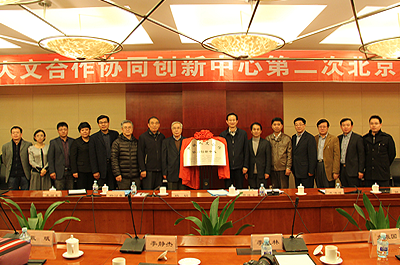

用户登录
欢迎
某某某
登录网站！请参与
全站检索
关键字
中文版
|
русский
|
English
首页
首页
中心概况
中心概况
中心简介
组织机构
联系我们
免责声明
新闻中心
新闻中心
中心新闻
业内要闻
图片新闻
公告通知
政策法规
政策法规
战略合作
战略合作
文化领域
旅游领域
教育领域
传媒领域
法律领域
战略领域
档案领域
信息资源
信息资源
俄文数据库
中文数据库
专家数据库
专家数据库
国内专家
国外专家
科研成果
科研成果
科研项目
科研论文
科研著作
校企合作
校企合作
在线交流
在线交流
即时通讯
邮件系统
意见反馈
用户注册

1
2
3
4
5
我校召开“中俄人文合作协同创新中心”培育组建...
我校召开“中俄人文合作协同创新中心”...
6月19日下午2:30，“中俄人文合作协同创新中心”培育组建工作汇报会在我校外事处多功能厅举行。 省教育厅副厅长辛宝忠，省教育厅科技处处长韩延平、副处长王明福，我校文科学院院长、主管科研副院长， 中俄学院、俄罗斯研究院、俄罗斯语言文学与文化研究中心主任、文化哲学研究中心负责人......
[详细]
中心新闻
业内新闻
通知公告
中俄人文合作协同创新确立的原因进行了阐述
2014-10-14
作为中俄全面战略协作伙伴关系的重要领域和最重要的支撑点
2014-10-14
工作的计划进行了扼要的汇报
2014-10-14
国家在涉及中俄人文合作战略层面尚有许多问题急需解决
2014-10-14
黑龙江大学有责任、有能力为中俄人文合作战略作出贡献
2014-10-14
中文数据库
俄罗斯大全俄语数据库
社科与人文科学期刊
莫斯科大学期刊子数据库
《事实与论据》期刊
KODEKS俄罗斯法律数据库
俄罗斯科学在线数据库
科学电子图书馆
俄文数据库
战略、文化领域数据库：
国务院发展研究中心信息网
法律数据库：
北大法意
北大法宝
教育领域：
中国教育和科研计算机网
教育领域
传媒领域
法律领域
战略领域
档案领域
文化领域
美国 太事务著名学者希伯来联合学院洛...
“东盟地区论坛预防性外交培训班”在南京大...
Prof. Steven Windmueller：The
中心相关平台派人参加新加坡“海洋边界划...
教育部“2011计划”研究项目组到中心调研
国防部外事办公室国际安全合作中心主任...
中心派员参加于布鲁塞尔举办的“东亚海洋...
旅游领域
美国 太事务著名学者希伯来联合学院洛...
“东盟地区论坛预防性外交培训班”在南京大...
Prof. Steven Windmueller：The
中心相关平台派人参加新加坡“海洋边界划...
教育部“2011计划”研究项目组到中心调研
国防部外事办公室国际安全合作中心主任...
中心派员参加于布鲁塞尔举办的“东亚海洋...
成果转化
翻译服务
人才交流
美国犹太事务著名学者希伯来联合学院洛杉矶分院院长Prof. Steve
“东盟地区论坛预防性外交培训班”在南京大学举办
Prof. Steven Windmueller：The
中心相关平台派人参加新加坡“海洋边界划界实践研讨会”
教育部“2011计划”研究项目组到中心调研
国防部外事办公室国际安全合作中心主任周波大校作“当前涉海军事斗争...
中心派员参加于布鲁塞尔举办的“东亚海洋安全国际会议”
更多<<
国内专家
美国犹太事务
东盟地区论坛
中心相关平台
2011计划
国防部外事办公室
美国犹太事务
东盟地区论坛
国外专家
美国犹太事务
东盟地区论坛
中心相关平台
2011计划
国防部外事办公室
美国犹太事务
东盟地区论坛
中国政策
俄罗斯政策
2011计划
美国犹太事务著名学者希伯来联合学院洛杉矶分院院长Prof. Steve
“东盟地区论坛预防性外交培训班”在南京大学举办
Prof. Steven Windmueller：The
中心相关平台派人参加新加坡“海洋边界划界实践研讨会”
教育部“2011计划”研究项目组到中心调研
国防部外事办公室国际安全合作中心主任周波大校作“当前涉海军事斗争...
中心派员参加于布鲁塞尔举办的“东亚海洋安全国际会议”
更多<<
科研项目
科研论文
科研著作
美国犹太事务著名学者希伯来联合学院洛杉矶分院...
“东盟地区论坛预防性外交培训班”在南京大学举办
Prof. Steven Windmueller：The
中心相关平台派人参加新加坡“海洋边界划界实践...
教育部“2011计划”研究项目组到中心调研
国防部外事办公室国际安全合作中心主任周波大...
中心派员参加于布鲁塞尔举办的“东亚海洋安全国...